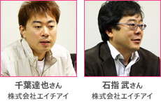

ニンテンドーDSi本体を傾けたり手に持って動かしたりしてプレイするという、まったく新しい操作方法を実現した『かたむく＋アクション カタムクション』。
1本で4つのゲームを楽しめるボリュームもさることながら、センサーを内蔵していないDSiで、どうしてこんなことができるのか。株式会社エイチアイの千葉さんと石指さんに、その新しい技術の秘密や制作の苦労などについてうかがいました。

メーカー：HI Games & Publishing／ジャンル：かたむく＋アクション／プレイ人数：1人
©2009 HI CORPORATION.
――
まずは、HI Games & Publishingさんについて教えてください。
千葉
株式会社エイチアイは、会社としては21年目になります。
これまでは主に制作受託という形で、大手のゲーム会社さんと一緒にゲームを作ってきていまして、裏方として携わってきました。
Wiiウェアを販売しているWiiショッピングチャンネルや、DSiウェアを販売しているニンテンドーDSiショップなどのダウンロード販売の市場が提供されまして、これなら参加できるなということで一昨年自分たちでゲームを発売するためのブランドである「HI Games & Publishing」を立ち上げました。
今回の『カタムクション』は、昨年の春にリリースしたWiiウェア『オニトレ〜教官は鬼軍曹〜』に続いて、任天堂さんのハード向けのソフトとして、われわれ単独名義では2タイトル目ということになります。
――
非常に独創的なプレイ方法になっていますね。ニンテンドーDSiにはWiiリモコンのような動きを検知するためのモーションセンサーはないのに、なぜこのような遊び方ができるんでしょうか。
千葉
『カタムクション』では、ニンテンドーDSiを傾けたり、上下左右に平行移動させることでゲームをプレイできるようになっています。
元々われわれの会社は、ゲームソフトを開発している部署のほかに、ミドルウェアを開発している部署がありまして……
――
「ミドルウェア」といいますと？
千葉
そうですね……、わかりやすく例を挙げると、携帯電話で3Dのグラフィックスが動くものを作るときに、その土台となる仕組みのようなものを開発している部門です。
そのミドルウェアの部門がフランスのリアルアイズ3D社という会社さんとお付き合いがあったんです。そして、その会社がカメラを使ってデバイス（携帯電話やゲーム機）の傾きや動きを検知するための技術を持っていたんですね。要は、カメラに映った背景が動くことで、そのデバイスがどちらに動いたのか、傾いたのかを検知するんです。
ちょうどカメラが搭載されたニンテンドーDSiが発表されて、カメラを生かした何かをしたかったんですが、普通に何かを撮影するゲームでは競争できないなと思っていました。この技術とニンテンドーDSiを組み合わせたらゲームが作れるんじゃないかということでスタートしました。
――
具体的にはどのような仕組みで機能しているんでしょうか？
石指
まずカメラで撮影した画像を認識して、特徴のある部分がどのように移動したかを検知します。続いて、それは本体が傾いただけなのか、それとも平行に動いたのかなどを判定する部分があります。今回は、その本体を傾けるという動作と、平行に動かすという2つの違う動作を使ってゲームを作ってみた、ということになります。動いた速度も検知することもできるんです。
千葉
カメラで動きを把握しますので、残念ながら真っ暗な部屋や、真っ白な壁にカメラを向けた状態などは、原理的にどうしても苦手になります。
――
それでは実際の画面を見ながらご紹介いただけますでしょうか。
千葉
最初は、4種類のゲームをプレイできます。クリアしていくと少し難易度が高くなったものを遊べるようになりますが、遊び方としては最初の4種類が基本となっています。
千葉
恐竜が追いかけてくるので、画面上に表示される矢印の方向にニンテンドーDSi本体を傾けて避ける、という簡単なゲームです。
まず『カタムクション』の覚えてもらうためのものですね。
矢印がでてからどのくらいで反応できたかという時間も見ていまして、早く反応できれば評価も上がります。ゲームとしては単純なので、間口は広いんじゃないかと。ずっとやっていると陶酔状態というか、自分がいま何の操作をしているのかわからなくなってきます（笑）。
千葉
こちらは平行移動を使ったゲームです。
ニンテンドーDSiの画面の下に川があって、そこから見える魚を取るという風にイメージしていただくといいと思います。画面を平行移動すると、画面内に見えている川底も合わせて移動します。ちょうど魚が中央に来たときに左右のボタンを押すと、くまさんの左手と右手が動いて、魚が取れるというゲームです。
――
これはプレイしてみて意外に苦戦しました。
千葉
魚のしっぽからだと追いかける形になりますので、頭の方からすくうようにすると取りやすいと思います。
最初の内は制限時間内に何匹取れるかというゲームですが、あとになってくると魚の重量も関係してきて、大きな魚を狙って取れるゲームになったりもします。
――
魚が画面から外れると、ついつい体が動くんですよね。
千葉
ドジョウすくいしているみたいになりますよね（笑）。
石指
ニンテンドーDSiを傾けてジャイロを上下に動かして、アイテムを取りながらゴールを目指すゲームです。
千葉
ジャイロは、ブレーキをかけたり何かにぶつかったりしない限り、勝手に右に動いていきます。でも、ただ止まらないだけだと制限時間内にクリアできないので、時計のアイテムを取れるとタイムボーナスがつくようになっています。
石指
あとの方になってくると、障害物や建物を避けるためにブレーキをかけないといけないところも出てきます。
千葉
これは今回一番のオススメですね。ニンテンドーDSiのカメラに映ったプレイヤーの周囲360度にモノノケが出てくるので、モノノケに照準を合わせて退治するゲームです。
プレイヤーの後ろからも攻めてくるのでそのときは実際に振り返って倒さないといけません。DSiを持ったまま回転するイスなどに座って遊ぶと楽しいですし、うまくプレイできます。
――
カメラに写った実際の映像を背景に使うのが新鮮でした。
千葉
カメラを通して見えている実際の背景でシューティングというアイデア自体は最初からありました。
ただ、人間に近い形をした敵キャラって実写の中に溶け込みにくいんです。かといって、ゲームっぽすぎるキャラが突然実写の中にあらわれても興ざめだし。
それで、だったらオバケだろうということになりました。壁から急に出てきてもオバケなら違和感がないし、ということで、それもわりと最初の段階で決まっていました。
石指
敵のグラフィックもだいぶ凝りましたね。最初はデフォルメしたオバケでしたが。
千葉
後ろを振り向いて、いきなり近くにいたら怖いだろうという感じにしたかったので。まさにゲームに振り回される感じで（笑）。
――
この4種類のゲームにしぼりこむまでにどのくらいの数のアイデアがあったんでしょうか。
千葉
社内で20〜30ほどアイデアを出して、その中から面白いものをとしぼりこんでいったんですが、実際プレイしてみると思っていたものと違ったり。
レースゲームだったり、バランスを取れるゲームなんかもあったんですが、ゲームがうまい人じゃないと難しいものもあったので、誰でも直感的に操作がわかってすぐに楽しめる間口の広いものを、というところでもしぼりこんだ部分はありました。
ああ、ティッシュ配りのゲームとかもありましたね。
石指
ニンテンドーDSiをティッシュに見立てて、人に向かって渡す動きをすると相手の反応があったり、ティッシュ配りの人が疲れたりするっていう（笑）。
千葉
アレはやらなくて良かったですね（苦笑）。しかも、日本のお客さんにしかわかってもらえなさそうですし。
――
苦労した点などは？
千葉
やはり難易度調整ですね。最後までずっとDランクから上がれないのでは楽しめませんし、かといってすぐにSランクが取れるようではやり込み要素がなくなってしまう。そのあたりの調整は本当に最後までやってもらっていました。
石指
やってましたね。結構のどもと過ぎちゃうと忘れちゃうんですが（笑）。
千葉
ちなみに傾きって、平行移動とまったく違う値が返ってくるものなんです。
――
「右手を下に傾けたとき」と「右方向に動かしたとき」は、機械から見ると、逆向きの値になってしまうんですね。
石指
そうですね。この仕組みの場合、値の見方を最初に指定してあげないと区別もできないんです。
一方で、通常の加速度センサーより、敏感すぎたり鈍すぎたりという部分は調整できるので、操作はやりやすくなっています。また、ずーっと同じ方向へ動かしても永遠とその動きを検知できるところも、加速度センサーでは実現し難い操作の一つです。
そういえば、スタッフロールは（笑）。
千葉
すぐにスタッフロールを見てもらえるようにオプション画面に入れているんですが、これは業界初の、自分でDSiを動かしてみるスタッフロールなんです。たくさん動かさないといけないので、たいてい一番下までは見てもらえない（笑）。
一同
（笑）
千葉
やはり操作感覚は人によって違うものなので、いかに共通の体験に落とし込むかというところに苦労しましたね。それでいて、ボタン操作でいいじゃんといわれないようにしたかったですし。
たとえば、人によっては、ものを傾けるとき、一度ちょっと逆方向に傾けてから反動をつけるように動かすんです。クセだと思うんですが。
これはプログラムが悪いのか、操作の仕方が悪いのかという切り分けは非常に難しかったです。
――
お客さまからの反応などは？
千葉
結構いろんなところの書き込みも拝見しましたし、ニンテンドーDSiショップの人気ランキングでも何回かランクインさせていただいて、ダイレクトに反応がわかるので、モチベーションにつながっていると思います。
――
やはり「DSiにはセンサーがついていないのにどうやってるの？」と最初に驚かれませんか？
千葉
そうですね。
ただ、自分の子供にもプレイさせてみたんですが、子供だと素直というか、驚きもなくそのままゲームに入っていっちゃうんですよね（笑）。
これ本当はすごいんだぞといいたいんですが。やはり、ゲームのことをよく知っていらっしゃる方に驚いていただけることが多いです。
――
ちなみに、前作のWiiウェアと今作のニンテンドーDSiウェアのようにダウンロードして遊ぶゲームを選ばれたのはなぜですか？
千葉
ダウンロードコンテンツですと（パッケージで販売しているソフトに比べて）価格帯も下がりますし、ワンアイデアでちゃんと面白いものを出せば響く市場かなと考えたんです。
元々私たちの場合、社内にプランナーもいて大手ゲームメーカーさんの受託開発でも、こういうゲームはどうですかという形でプランニングから制作にも携わっていました。なので、自分たちがやりたいものを自分たちの名前で出せるのは魅力でしたね。
あと、（お店で売っている）パッケージソフトだと、売れるものを作らなければいけないということで、ゲームのジャンルも限られてきますし、アイデア勝負のものは出しにくいかなと。
――
今回の技術を使って、また別のゲームをというのはお考えだったりは？
千葉
そうですね。作りながらもっとこういうチャレンジもできるんじゃないかというネタもでてきましたし、「モノノケ探知機」のような方向性のゲームには可能性も感じます。
実際お客さまの評判もいいようなので、強化バージョンやいろんなネタを満載したものはアリかなと考えています。
石指
カメラがついていたからというのはもちろんですが、ゲームとしても体を動かすという部分で、コンセプト的にDSiに向いている操作方法だったんじゃないかなと。
千葉
さわってみてもらえば、その新しさはすぐにわかっていただけると思います。人に見せたくなるゲームでもあると思いますので、お友達にも教えていただいて、とにかくたくさんの方に手に取ってみていただきたいですね。
――
ありがとうございました。
｜「あれ？DSがサカサですけど。」シリーズ｜かたむく＋アクション カタムクション｜